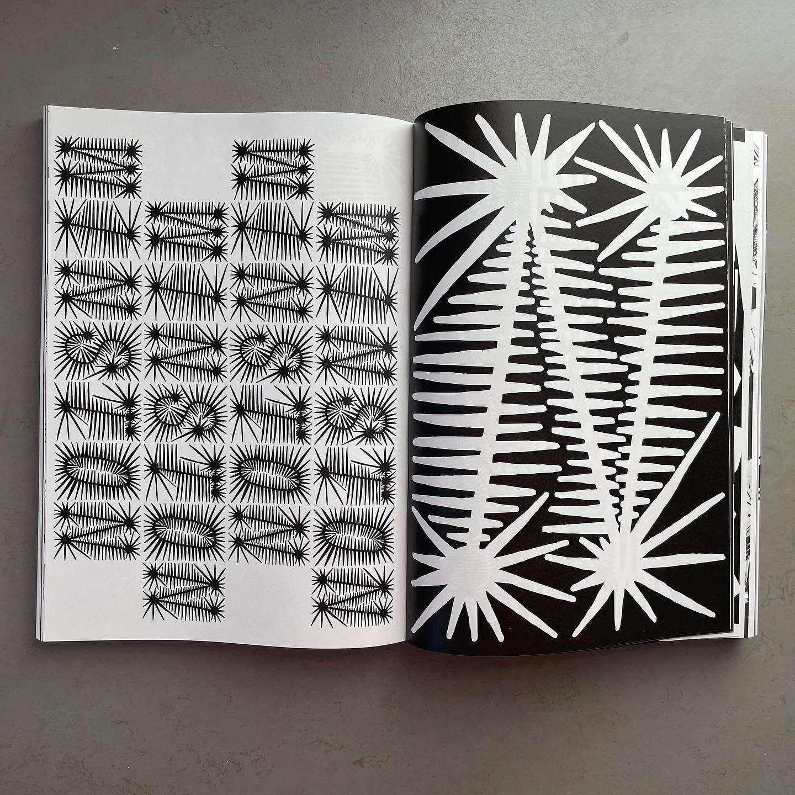

SpikyInfo


A display typeface intended to dazzle the viewer with its
intricate and almost psychedelic linework. It is based on multiple typographic experiments, out of which
came a loose set of rules to create this typeface. To make it, I first created a skeleton
font
digitally, drew the spikes
by hand, and digitalised the result. It was created at my course's
Typography class, and is
featured in Character Club, a
collective publication with typefaces made by students of this class.
Typeface, 2022